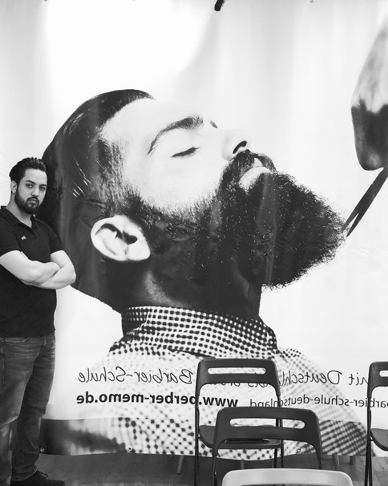

Durch den wiederauflebenden Barbertrend erfuhr der Männermarkt eine bemerkenswerte Renaissance. Mehmet Cömert erkannte 2015 eine bedeutende Lücke in der Friseurausbildung, die überwiegend auf Frauen ausgerichtet war.
Um diese Lücke zu schließen, gründete er Deutschlands erste Barbier-Schule, die sich auf die speziellen Anforderungen und Techniken des Barber-Handwerks konzentriert.
Mehmet Cömerts Barbier-Schule bietet authentische Workshops an, die als Fort- und Weiterbildungen konzipiert sind. Diese Workshops decken klassische Herrenhaarschnitte, Bartschnitte und Rasuren ab und lehren verschiedene Bartformen, um stilvolle Looks zu kreieren, die das Selbstbewusstsein jedes Mannes stärken.
Mit 11 Jahren hielt ich zum ersten Mal eine Friseurschere in der Hand und begann, in einer Scheune die Haare von Freunden und Familienmitgliedern zu schneiden. Diese frühe Leidenschaft für das Friseurhandwerk begleitete mich durch meine gesamte Jugend und führte zu einer intensiven Ausbildung.
Als Gründer und Initiator präsentiere ich den Workshop „Wecke den Barbier in dir" – eine erstklassige Gelegenheit für alle, das Barbering auf das nächste Level zu bringen. Meine Liebe zum Detail und der perfekte Umgang mit jedem Arbeitsutensil im Barber-Business zeichnen diese Schulungen aus.
Mit langjähriger Erfahrung im Friseurhandwerk möchte ich sicherstellen, dass alle Teilnehmer von meinem umfangreichen Wissen profitieren und ihre Fähigkeiten optimieren können. Durch diese gezielte Weiterbildung können die Teilnehmer sicherstellen, dass der gepflegte Mann sich gut fühlt und hervorragend aussieht.